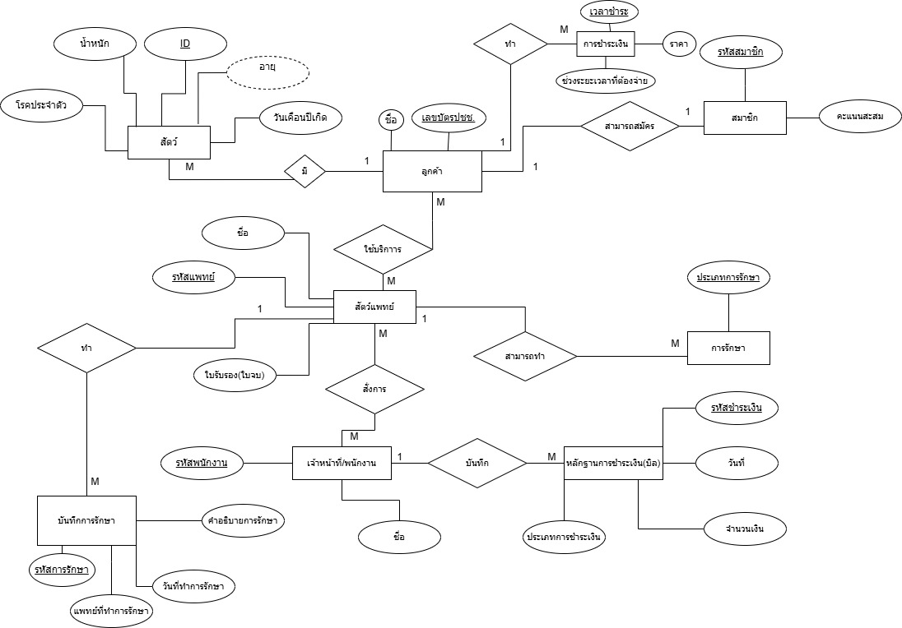
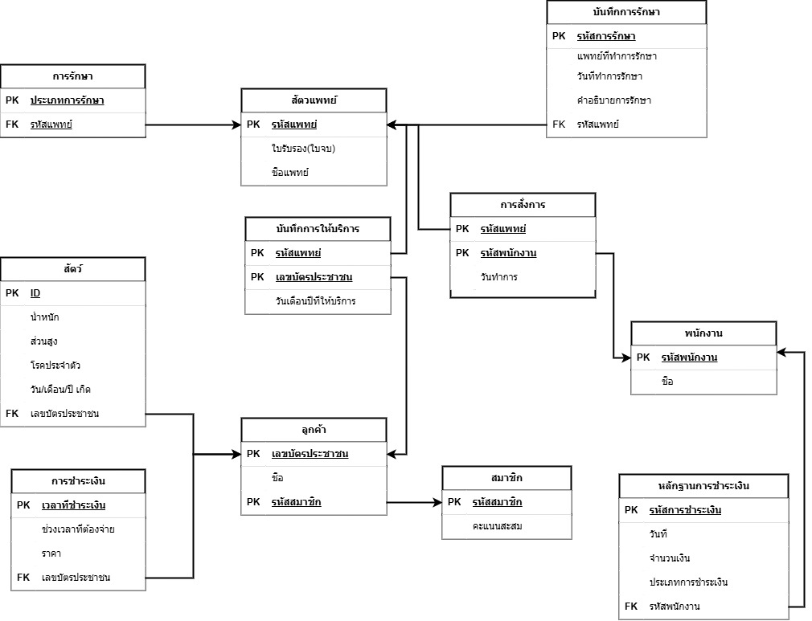
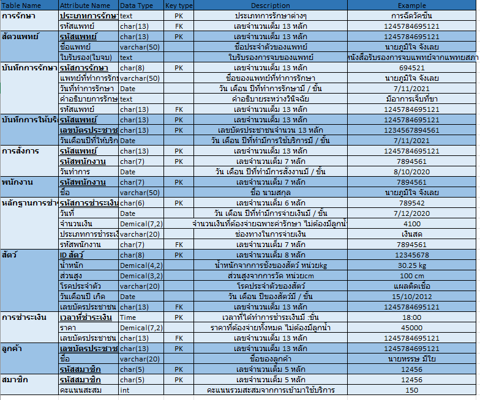
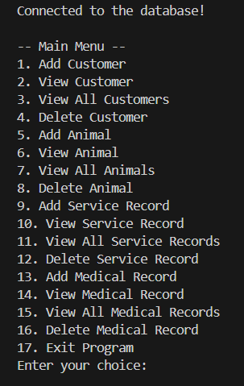

Developed a Python-based Veterinary Clinic Management System with MySQL backend. Implemented CRUD operations for customers, pets, service records, and medical records using a menu-driven CLI. Applied prepared statements to enhance database security and automated commits after each operation.
โปรแกรมนี้เป็นระบบจัดการข้อมูลคลินิกสัตวแพทย์ ที่ช่วยให้สามารถจัดการ ลูกค้า, สัตว์เลี้ยง, บริการ, และประวัติการรักษา ได้อย่างง่ายดาย ผ่านเมนูแบบ Command-Line Interface (CLI) โดยข้อมูลทั้งหมดถูกเก็บใน ฐานข้อมูล MySQL
- ลูกค้า 1 คน สามารถมีสัตว์เลี้ยงได้หลายตัว
- สัตว์เลี้ยงแต่ละตัว ต้องมีเจ้าของ (ลูกค้า) เพียง 1 คน
- ลูกค้า 1 คน สามารถสมัครสมาชิกได้ 1 สมาชิก
- สมาชิกจะมีคะแนนสะสม
- ลูกค้า 1 คน สามารถเข้ารับบริการได้หลายครั้ง
- สัตวแพทย์ 1 คน สามารถทำการรักษาได้หลายประเภท
- การรักษาแต่ละประเภท ต้องมีสัตวแพทย์รับผิดชอบ
- สัตวแพทย์ 1 คน สามารถบันทึกการรักษาได้หลายรายการ
- การรักษาแต่ละครั้งต้องมีบันทึกการรักษา
- สัตวแพทย์สามารถสั่งการทำงานให้พนักงานได้
- พนักงาน 1 คน สามารถถูกสั่งงานได้หลายครั้ง
- การชำระเงินต้องมีหลักฐานการชำระเงิน
- หลักฐานการชำระเงินต้องระบุพนักงานผู้รับเงิน
- ลูกค้า 1 คน สามารถมีการชำระเงินได้หลายครั้ง
แผนภาพใช้แสดงโครงสร้างข้อมูลของระบบ
ใช้สำหรับออกแบบฐานข้อมูลขั้นต้นก่อนสร้างฐานข้อมูลจริง ประกอบด้วย:
- Entities , Attributes , Relationships

แทนโครงสร้างของฐานข้อมูลเชิงสัมพันธ์ในรูปแบบตาราง (tables)
และความสัมพันธ์ระหว่างตาราง โดยประกอบด้วย:
- Table , Attributes , Primary Key , Foreign Key

อธิบายรายละเอียดของข้อมูลทั้งหมดในฐานข้อมูล โดยให้ข้อมูลเชิงลึกเกี่ยวกับ
- ชื่อตารางและฟิลด์ , ประเภทข้อมูล , ขนาดข้อมูล ,คำอธิบายหรือความหมายของฟิลด์ ,
Constraints ต่างๆ

- เชื่อมต่อฐานข้อมูล MySQL
เช่น mysql -u *** -p , mysql -u ***_user -p
และใช้ฐานข้อมูล use db_*** , use ***_db
- สร้างตารางใน Database (CREATE TABLE)
เช่น CREATE TABLE customer(...); , CREATE TABLE animal(...);
- เพิ่มข้อมูลตัวอย่าง (INSERT)
เช้น INSERT INTO customer (...) VALUES (...);
- ทดสอบคำสั่ง Query และความสัมพันธ์ (SELECT / JOIN)
เช่น SELECT customer_id, animal_id FROM animal;
- พัฒนา CRUD ด้วย Python
